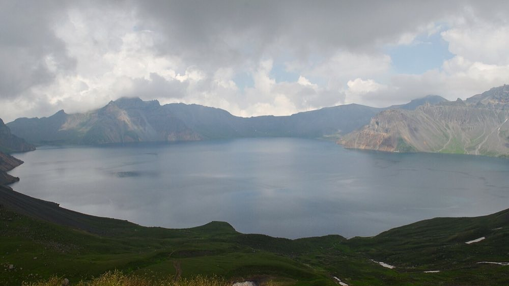

Northeast China Border Road Trip
Three weeks by car in a loop from Shenyang along China’s borders with North Korea and Russia: the Yalu River and Goguryeo tombs, Changbai Mountain’s crater lake, Korean Yanbian, the three-country view at Fangchuan, Russian-flavoured Harbin and Heihe, volcanoes, crane wetlands and Manchukuo history.
Researched November 2026 for late May to mid June 2027. Hours, prices, border rules and booking rules change, so check before you go. Drive distances and times are estimates; confirm in Amap.

Why this loop
A road trip along the edge of China: look across the Yalu into North Korea, stand where China, Russia and North Korea meet, swim through Korean, Manchu and Russian influences, and climb to Changbai’s crater lake, with a cool early-summer climate the whole way.
Late May to mid June: 15–28°C and long daylight, the best time of year up here. The Changbai crater lake is usually thawed and open by June (late May can still close for wind or ice). Mosquitoes, midges and ticks are active in wetlands and forests. Dragon Boat Festival is a single day off on Wed 9 June 2027.
The route: Shenyang → Dandong → Huanren → Ji’an → Changbai Mountain → Tumen → Yanji → Fangchuan → Hunchun → Mudanjiang (Suifenhe day trip) → Harbin → Wudalianchi → Heihe → Nenjiang → Qiqihar → Daqing → Chagan Lake → Changchun → Shenyang. 21 days, about 4,000 km plus day trips, drives of up to about 3½ hours each.
Highlights
- The Yalu River Broken Bridge and Hushan Great Wall, facing North Korea
- Goguryeo capitals and tombs at Huanren and Ji’an (UNESCO)
- Changbai Mountain’s Tianchi crater lake and waterfall
- Fangchuan: China, Russia and North Korea in one view
- Harbin’s Russian architecture, Heihe on the Amur, and the Aihui museum
- Wudalianchi volcanic lakes (some sites closed in 2026), Zhalong cranes, and Changchun’s Puppet Emperor’s Palace
Good to know
- Many passports are visa-free for up to 30 days (check yours). Carry passports every day: border areas have ID checkpoints, and at Fangchuan foreigners may be stopped before the Russian border line.
- Charge at least every 350 km and fill up in Heihe, Nenjiang and Erdaobaihe: charging is thin on the remote stretches.
- Changbai Mountain needs real-name booking; keep the second day as a spare in case of weather.
- Bring long sleeves and DEET for Zhalong, Wudalianchi and the forests (ticks).
Two ways to do it
💰 Best value
- Stay: the value pick in each city, 4-star or a platform-rated equivalent (see Where to stay).
- Eat: local specialities at well-rated everyday places.
- About CNY 12,190–15,740 per person for 21 days, including the car, excluding travel to the start.
✨ Best experience
- Stay: a Changbai hot-spring resort, a historic hotel on Harbin’s Central Street, an Amur-view room in Heihe, a lakeside resort at Chagan Lake.
- Eat: Korean barbecue in Yanji, Russian restaurants in Harbin and Heihe, a Chagan Lake fish feast, Dandong seafood.
- About CNY 14,490–19,580 per person.
Same route and days for both; only hotels and meals change.
Itinerary: 21 days, 20 nights
Each driving day is either one drive (leave early, arrive for a late lunch, then sightseeing only) or two drives with a lunch stop in between. Short hops to sights are not counted.
Morning
Fly or take the train to Shenyang; collect the car.
Lunch
Lunch in Shenyang: Laobian dumplings.
Afternoon
Mukden Palace (UNESCO) and the Zhang Family Mansion.
Morning
🚗 Shenyang → Dandong · 245 km · 2h45
Leave about 9:30.
Lunch
Late lunch in Dandong: Yellow Sea seafood.
Afternoon
The Yalu River Broken Bridge, facing Sinuiju in North Korea.
Morning
🚗 Dandong → Hushan Great Wall · 20 km · 30 min
Hushan Great Wall and "One Step Across" at 8:30.
Lunch
Lunch near Hushan or in Kuandian.
Afternoon
🚗 Hushan → Huanren · 200 km · 2h45
Arrive Huanren late afternoon.
⚡ Charge at the lunch stop (about 315 km since the last charge)
Morning
Wunü Mountain, the first Goguryeo capital (UNESCO), at opening.
Lunch
Lunch in Huanren.
Afternoon
🚗 Huanren → Ji’an · 175 km · 2h30
Ji’an riverside, North Korea across the Yalu.
⚡ Charge at the lunch stop (about 210 km since the last charge)
Morning
🚗 Ji’an → Tonghua · 95 km · 1h20
Goguryeo tombs and the Gwanggaeto stele from 8:30, leave about 10:00.
Lunch
Lunch in Tonghua.
Afternoon
🚗 Tonghua → Erdaobaihe · 260 km · 3h
Arrive at the north gate town by early evening.
⚡ Charge at the lunch stop (about 290 km since the last charge)
Morning
North slope: Tianchi crater lake first thing (weather permitting).
Lunch
Lunch inside the park.
Afternoon
Changbai waterfall and hot springs. Spare day if the summit was closed.
Morning
🚗 Erdaobaihe → Tumen · 190 km · 2h30
Leave about 9:30.
Lunch
Lunch in Tumen, then the Tumen River bridge viewpoint facing North Korea (stay off the bridge).
Afternoon
🚗 Tumen → Yanji · 50 km · 45 min
Yanbian University corner and Korean food streets; barbecue for dinner.
⚡ Charge overnight at the previous hotel or before setting off (about 330 km since the last charge)
Morning
🚗 Yanji → Fangchuan · 175 km · 2h15
Leave about 8:30 with passports.
Lunch
Lunch at Fangchuan (Jingxin village; bring snacks as a backup), then the Longhu tower: China, Russia and North Korea in one view. Foreign access is decided on site.
Afternoon
🚗 Fangchuan → Hunchun · 60 km · 50 min
Evening in Hunchun.
⚡ Charge overnight at the previous hotel or before setting off (about 260 km since the last charge)
Morning
🚗 Hunchun → Wangqing · 100 km · 1h30
Leave about 9:00 on the expressway.
Lunch
Lunch in Wangqing (Korean-Chinese food).
Afternoon
🚗 Wangqing → Mudanjiang · 200 km · 2h15
Evening in Mudanjiang. (If the G331 border road is open and you want it, see the note under Driving.)
⚡ Charge overnight at the previous hotel or before setting off (about 255 km since the last charge)
Morning
Out to Suifenhe (about 150 km, 1h45, sightseeing day).
Lunch
Russian-style lunch in Suifenhe; old town, the border trade market and the Russian-era buildings.
Afternoon
Back to Mudanjiang by late afternoon. (Dongning Fortress would add a third drive, so it is left out.)
⚡ Charge this evening at the hotel (about 320 km since the last charge)
Morning
Jingpo Lake and the Diaoshuilou waterfall (about 90 km each way, 1h15, sightseeing only).
Lunch
Lunch by the lake: Jingpo Lake fish.
Afternoon
Back to Mudanjiang by late afternoon.
⚡ Charge this evening at the hotel (about 330 km since the last charge)
Morning
🚗 Mudanjiang → Harbin · 330 km · 3h45
Leave about 8:30.
Lunch
Late lunch in Harbin: guobaorou.
Afternoon
Central Street and Saint Sophia Cathedral.
⚡ Charge overnight at the previous hotel or before setting off (about 180 km since the last charge)
Morning
Unit 731 museum.
Lunch
Russian lunch (Huamei or Madier).
Afternoon
Songhua River and Sun Island; Harbin beer.
⚡ Charge this evening at the hotel (about 350 km since the last charge)
Morning
🚗 Harbin → Bei’an · 320 km · 3h30
Leave about 8:30.
Lunch
Lunch in Bei’an.
Afternoon
🚗 Bei’an → Wudalianchi · 65 km · 1h
Lake shore at sunset.
⚡ Charge overnight at the previous hotel or before setting off (about 40 km since the last charge)
⚡ Charge at the lunch stop (about 320 km since the last charge)
Morning
Laoheishan, Shuijinggong and Nanyaoquan were closed under nature-reserve controls (official reply, Sep 2026). If they have reopened, go at opening; otherwise the lake shore and other open viewpoints (check status locally).
Lunch
Lunch at Wudalianchi: mineral-water tofu.
Afternoon
🚗 Wudalianchi → Heihe · 240 km · 2h45
Amur riverfront at dusk, facing Blagoveshchensk.
⚡ Charge this evening at the hotel (about 325 km since the last charge)
Morning
Aihui History Museum (Treaty of Aigun), about 30 km.
Lunch
Russian-style lunch in Heihe.
Afternoon
Sino-Russian trade street and the riverside.
Morning
🚗 Heihe → Nenjiang · 240 km · 3h
Leave about 9:00 with a full charge.
Lunch
Late lunch in Nenjiang.
Afternoon
Rest and recharge.
Morning
🚗 Nenjiang → Zhalong · 280 km · 3h15
Leave about 9:00.
Lunch
Late lunch at Zhalong.
Afternoon
🚗 Zhalong → Qiqihar · 35 km · 40 min
Red-crowned cranes in the wetland first; Qiqihar barbecue for dinner.
⚡ Charge overnight at the previous hotel or before setting off (about 350 km since the last charge)
Morning
🚗 Qiqihar → Daqing · 140 km · 1h40
Leave about 9:30.
Lunch
Lunch in Daqing.
Afternoon
🚗 Daqing → Chagan Lake · 190 km · 2h15
Chagan Lake in the late afternoon; lake fish for dinner. Stay by the lake.
⚡ Charge overnight at the previous hotel or before setting off (about 335 km since the last charge)
Morning
🚗 Chagan Lake → Changchun · 220 km · 2h30
Leave about 9:30.
Lunch
Late lunch in Changchun.
Afternoon
The Puppet Emperor’s Palace (Manchukuo) and the Eight Ministries (exteriors).
⚡ Charge overnight at the previous hotel or before setting off (about 350 km since the last charge)
Morning
🚗 Changchun → Shenyang · 300 km · 3h20
Leave about 9:00.
Lunch
Late lunch in Shenyang.
Afternoon
Return the car; fly or take the train home.
⚡ Charge overnight at the previous hotel or before setting off (about 230 km since the last charge)
Driving and charging
- Driving in China needs a Chinese licence. Visitors can get a temporary driving permit (up to 3 months) at a vehicle office with a passport and a translated licence; an International Driving Permit is not accepted.
- Car: a large 6-seat electric MPV such as the Li Auto MEGA, ZEEKR 009 or DENZA D9. The MEGA and 009 are fully electric with long range and very fast charging (the MEGA has its own Li Auto supercharger network on main expressways). The D9 also comes as a plug-in hybrid (DM-i) with a fuel backup, the safest choice for the remote stretches. Plan charging stops with the car's navigation or Amap's charger layer, and arrive at each hotel with enough charge for the next morning.
- Install the charging apps before you go (State Grid 'e充电', TELD '特来电', Star Charge '星星充电', or aggregator '快电'); most run inside WeChat/Alipay and accept a foreign-linked Alipay/WeChat Pay. Charge overnight at hotels with chargers where possible: ask when booking.
- Plan each day to arrive with 30%+ battery; cold mornings at Changbai (near 0 °C at altitude) and long climbs cut electric range. Fill up in Hunchun before the G331 and in Heihe before Nenjiang.
- Driving permit: a foreign licence is not valid in China. Each driver needs a Chinese temporary driving permit (临时驾驶许可) from a vehicle management office or airport service desk (e.g. at Shenyang), or a full Chinese licence; the rental company can advise.
- Border-road option: the G331 runs along the Russian frontier from Hunchun to Dongning (about 250 km, around 5 hours on a two-lane road). Part of the Heilongjiang section was reported closed for repairs in 2026, and the road crosses a border management zone with ID checks. The guide routes you on the expressway via Wangqing instead; if you want the G331, check that it is open and split the day with lunch at Luozigou, then stay in Dongning and visit Suifenhe on the way to Mudanjiang.
- Total driving: about 4,130 km.
Transport costs for the car Estimates. Tolls: expressway share of the route at CNY 0.40–0.60 per km for a passenger car. Charging: 22–26 kWh per 100 km for a large electric MPV at CNY 1.2–1.8 per kWh on public fast chargers (cheaper at hotels or off-peak). Car hire is separate.
| Whole car | Per person (6) | |
|---|---|---|
| Distance | 5,100 km (route 4,130 + sightseeing 970); expressway about 3,100 km | |
| Highway tolls | CNY 1,240–1,860 | CNY 210–310 |
| Charging (1,120–1,330 kWh) | CNY 1,350–2,390 | CNY 220–400 |
| Total | CNY 2,590–4,250 | CNY 430–710 |
| Car hire (estimate) | CNY 14,000–20,000 | CNY 2,330–3,330 |
| If you rent the DENZA D9 DM-i and drive on fuel (6.6–7.1 L/100 km, CNY 8/L assumed) | CNY 2,690–2,900 | CNY 450–480 |
Conservative case for a fully loaded MPV: 24–30 kWh per 100 km, i.e. 1,220–1,530 kWh, CNY 1,470–2,750 for the car. Pay tolls by ETC or at staffed lanes; keep a bank card or cash as backup.
⚡ Charging plan Plans a top-up at least every 350 km and arrival with 20–30% left: a full six-seat MPV at expressway speed with air-conditioning falls well short of its rated range. Charge at lunch stops (30–45 min on a fast charger) or near the hotel in the evening, and check each station in Amap or the operator app on the day; do not rely on a hotel listing that says it has chargers.
| Day | Where | km since last charge |
|---|---|---|
| 3 | Lunch near Hushan or in Kuandian. (lunch stop) | 315 km |
| 4 | Lunch in Huanren. (lunch stop) | 210 km |
| 5 | Lunch in Tonghua. (lunch stop) | 290 km |
| 7 | Erdaobaihe (overnight or morning) | 330 km |
| 8 | Yanji (overnight or morning) | 260 km |
| 9 | Hunchun (overnight or morning) | 255 km |
| 10 | Mudanjiang (evening) | 320 km |
| 11 | Mudanjiang (evening) | 330 km |
| 12 | Mudanjiang (overnight or morning) | 180 km |
| 13 | Harbin (evening) | 350 km |
| 14 | Harbin (overnight or morning) | 40 km |
| 14 | Lunch in Bei’an. (lunch stop) | 320 km |
| 15 | Heihe (evening) | 325 km |
| 18 | Nenjiang (overnight or morning) | 350 km |
| 19 | Qiqihar (overnight or morning) | 335 km |
| 20 | Chagan Lake (overnight or morning) | 350 km |
| 21 | Changchun (overnight or morning) | 230 km |
Border areas: what foreigners can see
- many passports can enter China visa-free (check yours) for up to 30 days (mutual exemption since Feb 2024): 21 days fits, but carry passports at all times; border checkpoints on the G331, at Quanhe (Fangchuan), Tumen, Hushan/Dandong, Suifenhe and Heihe check every passenger.
- Hotels must be licensed to register foreigners. In small border towns (Erdaobaihe, Huanren, Dongning, Nenjiang, Fangchuan area) some cheap hotels cannot take foreign guests: confirm when booking. Hotels file the police registration for you.
- Fangchuan and parts of the G331 are in border management zones. Foreigners have generally been allowed through with passports, but policy changes without notice: call Hunchun police/tourism (or the hotel) a day before. Do not photograph soldiers, military posts or North Korean/Russian border installations; no drones anywhere on the border.
- Do not cross, wade, throw items or wave to the other side at Yibukua (Hushan), the Tumen bridge or riverbanks. Russia day trips from Heihe or Suifenhe need a separate Russian entry check and a rental car cannot cross: skip unless planned separately.
- Real-name booking: most sites and museums use WeChat mini programs; support for foreign passports has improved since 2024 but is patchy. Set up WeChat Pay/Alipay with a foreign card before travel, and allow time at ticket windows with passports.
- Fangchuan, the Tu boundary marker, the Tumen bridge and national gate, Hushan "One Step Across" and the Suifenhe national gate are each decided separately; none is guaranteed for every foreign passport. Confirm each one with the scenic area and local border authorities 1–3 days ahead, and follow staff instructions.
Top sights

.jpg){kind=link}


Shenyang
- Shenyang Imperial Palace (Mukden Palace): The Manchu Qing court's first palace (1625), before the move to Beijing. 08:30-17:00 (Apr 10-Oct 10); last entry ~16:15 · closed Mondays only from 11 Oct to 9 Apr (open Mondays in summer) · 50 CNY · Passports can book and enter (official WeChat or Tongcheng); bring the original
- Zhaoling Tomb (Beiling Park): Tomb of Hong Taiji, second Qing ruler, in a large park. ~07:30-17:00 (tomb area) · 50 (tomb); park entry ~free (verify) CNY · Real-name booking via the site's WeChat mini program or Ctrip/Trip.com; most systems now accept a foreign passport, otherwise buy at the window with the passport (verify).
- Zhang's Mansion (Marshal Zhang Zuolin residence): Home of warlord Zhang Zuolin and the 'Young Marshal' Zhang Xueliang. ~08:30-17:00 (May-Oct) · closed Mondays (verify) · 48 (approx.) CNY · Real-name booking via the site's WeChat mini program or Ctrip/Trip.com; most systems now accept a foreign passport, otherwise buy at the window with the passport (verify).
Dandong
- Yalu River Broken Bridge: Bridge bombed in 1950; walk out to the broken end facing North Korea. ~08:00-17:30; last ticket 17:00 · 30 CNY · Real-name booking via the site's WeChat mini program or Ctrip/Trip.com; most systems now accept a foreign passport, otherwise buy at the window with the passport (verify).
- Yalu River cruise (Sino-Korean boundary river): Short boat trip along the river past the Sinuiju waterfront. ~08:00-17:00, departures when full · ~70-80 (combo with bridge ~105) CNY · Real-name booking via the site's WeChat mini program or Ctrip/Trip.com; most systems now accept a foreign passport, otherwise buy at the window with the passport (verify).
- Hushan Great Wall: Ming-era eastern end of the Great Wall, overlooking North Korea at Yibukua ('one step across'). ~07:30-17:30 (summer) · ~60 (verify) CNY · Real-name booking via the site's WeChat mini program or Ctrip/Trip.com; most systems now accept a foreign passport, otherwise buy at the window with the passport (verify).
Huanren
- Wunü Mountain City (Wunüshan): Clifftop first capital of the Goguryeo kingdom (37 BC), reached by ~1,000 steps. ~08:30-16:00 (last entry) · 100 (approx.; some listings 70) CNY · Real-name booking via the site's WeChat mini program or Ctrip/Trip.com; most systems now accept a foreign passport, otherwise buy at the window with the passport (verify).
Ji'an
- Gwanggaeto (Haotaiwang) Stele: 6 m stele (414 AD) recording Goguryeo king Gwanggaeto's deeds. 08:30–16:30 (from Oct 2026; check summer hours) · 30 (3-site combo ~70) CNY · Real-name booking via the site's WeChat mini program or Ctrip/Trip.com; most systems now accept a foreign passport, otherwise buy at the window with the passport (verify).
- General's Tomb (Tomb of King Jangsu): Stepped granite pyramid tomb, the 'Oriental Pyramid'. 08:30–16:30 (from Oct 2026; check summer hours) · 30 (3-site combo ~70) CNY · Real-name booking via the site's WeChat mini program or Ctrip/Trip.com; most systems now accept a foreign passport, otherwise buy at the window with the passport (verify).
- Wandu Mountain City and Cemetery: Goguryeo mountain capital with a valley of thousands of stone tombs. 08:30–16:30 (from Oct 2026; check summer hours) · 30 (3-site combo ~70) CNY · Real-name booking via the site's WeChat mini program or Ctrip/Trip.com; most systems now accept a foreign passport, otherwise buy at the window with the passport (verify).
Erdaobaihe
- Changbai Mountain North Slope: Tianchi (Heaven Lake): Volcanic crater lake on the China-North Korea border, reached by shuttle then 4x4. Visitor-centre check-in 07:00–14:30; summit-bus check-in 07:00–15:30 · closed None (summit closes in bad weather) · 105 gate + 85 shuttle bus + 80 summit 4x4 (2025 official FAQ) CNY · Real-name booking; 105 entry + 85 eco-bus + 80 summit 4x4. Any sight can close at short notice for weather (Tianchi closed by snow on early June 2024)
- Changbai Waterfall and Hot Spring Belt: 68 m waterfall below Tianchi; steaming springs and onsen eggs on the path. Same as north slope · closed Same as north slope · Included in gate + shuttle CNY · Covered by the north slope ticket.
- Green Abyss Pool and Grand Canyon (north slope): Emerald pool under a cascade; lower-altitude stops that work in fog. Same as north slope · closed Same as north slope · Included in gate + shuttle CNY · Covered by the north slope ticket.
Yanji
- Mao'ershan (Hat Mountain) Forest Park: Easy forest hill above Yanji with city views; locals' picnic spot. ~05:00-19:00 · Free CNY · No booking.
- China Korean Ethnic Folk Park: Recreated Korean-Chinese village; hanbok rental and food stalls. ~09:00-21:00 · Free / small fees for attractions (verify) CNY · No booking.
Tumen
- Tumen National Gate and boundary river: Old and new border gates with views across the river to Namyang, DPRK. ~08:00-19:00 (summer) · ~25 CNY · Real-name booking via the site's WeChat mini program or Ctrip/Trip.com; most systems now accept a foreign passport, otherwise buy at the window with the passport (verify).
Fangchuan
- Longhu Pavilion: 'one look, three countries': Tower at China's tip with views of Russia and North Korea where the Tumen meets the sea. Tickets 08:00–16:00 online, to 16:30 on site; Longhu tower closes 17:30 · ~97 incl. shuttle (verify) CNY · Foreign-passport access is decided by the scenic area and border authorities: confirm before going
- 'Tu' boundary marker and Zhanggufeng battlefield: Qing-era boundary stone and the 1938 Japanese-Soviet Lake Khasan battle site. Same as Fangchuan · not confirmed CNY · Controlled border zone: foreign access not confirmed and not included by default
Dongning
- Dongning Fortress Ruins (Xunshan): Japanese Kwantung Army tunnels where fighting continued after 15 Aug 1945. 08:30-16:30 (spring-summer), last entry 16:15 · closed Unclear (verify) · Free (reported) CNY · Reportedly free; bring passports.
Suifenhe
- Suifenhe Russian-era buildings and Big White Building: Chinese Eastern Railway town (1903) with Russian-style buildings. Exterior viewing all day · Free (exteriors) CNY · No booking.
- Suifenhe National Gate: Rail border gate on the line to Russia with a lookout over the frontier. ~08:30-17:00 (verify) · ~20-30 (verify) CNY · Real-name booking via the site's WeChat mini program or Ctrip/Trip.com; most systems now accept a foreign passport, otherwise buy at the window with the passport (verify).
Mudanjiang
- Jingpo Lake: Diaoshuilou Waterfall: Lava-dammed lake with a 20 m waterfall; cliff divers perform in summer (Jul-Sep). ~08:00-17:00 (waterfall listed 09:00-19:00) · Gate + shuttle ~128; + half-lake boat ~225 (Ctrip packages) CNY · Real-name booking via the site's WeChat mini program or Ctrip/Trip.com; most systems now accept a foreign passport, otherwise buy at the window with the passport (verify).
- Jingpo Lake Crater Primeval Forest ('Underground Forest'): Forest growing inside volcanic craters, 50 km from the lake. ~08:00-16:30 · closed Closed in snow season; open late May (verify) · ~80-100 (verify) CNY · Real-name booking via the site's WeChat mini program or Ctrip/Trip.com; most systems now accept a foreign passport, otherwise buy at the window with the passport (verify).
- Bohai Kingdom Shangjing Longquanfu Ruins: Ruins of the 8th-10th-century Bohai (Balhae) capital, modelled on Tang Chang'an. ~08:30-16:30 · closed Mondays possible (verify) · ~50 (verify) CNY · Real-name booking via the site's WeChat mini program or Ctrip/Trip.com; most systems now accept a foreign passport, otherwise buy at the window with the passport (verify).
Harbin
- St Sophia Cathedral (Harbin Architecture Art Museum): Byzantine-style Russian Orthodox church of 1907/1932 with old Harbin photos. ~08:30-17:30 · 20 (approx.) CNY · Real-name booking via the site's WeChat mini program or Ctrip/Trip.com; most systems now accept a foreign passport, otherwise buy at the window with the passport (verify).
- Central Street (Zhongyang Dajie): 1.4 km cobbled pedestrian street of Russian and Art Nouveau facades to the Songhua River. All day · Free CNY · No booking.
- Harbin New Synagogue (Jewish history museum): 1921 synagogue telling the story of Harbin's Jewish community. ~09:00-16:30 · closed Mondays (verify) · ~25 (verify) CNY · Real-name booking via the site's WeChat mini program or Ctrip/Trip.com; most systems now accept a foreign passport, otherwise buy at the window with the passport (verify).
Wudalianchi
- Laoheishan and Huoshaoshan volcanoes: Climb the 1720 lava cone and walk the 'stone sea' lava fields. CLOSED · closed Laoheishan, Shuijinggong and Nanyaoquan are closed under nature-reserve controls (official reply, 14 Sep 2026) until a new plan is approved · Check for a reopening notice before planning around it
- Wudalianchi mineral springs (Yaoquan): Fizzy cold mineral springs; locals drink and fill bottles. ~07:00-17:00 · closed Nanyaoquan closed (official reply, Sep 2026); other springs: check · ~38-100 (various combos; verify) CNY · Check status locally
Heihe
- Heilongjiang (Amur) riverfront and Russian view: Riverside promenade facing Blagoveshchensk, Russia, 750 m away. All day · Free CNY · No booking.
- Aihui old town and Treaty of Aigun site: Qing frontier fortress where the 1858 Treaty of Aigun ceded land to Russia. Museum Tue–Sun 09:00–15:30 (last entry 15:30) · closed Monday (except public holidays) · Free with passport CNY · Book on the official WeChat; bring the booking ID or QR code. Foreign-passport online booking not confirmed
Qiqihar
- Zhalong Nature Reserve (red-crowned cranes): Reed wetland with daily red-crowned crane flights. 07:30-17:00 (May-Oct); crane flights 09:30, 11:00, 14:00, 15:30 · 65 + shuttle 10 CNY · Crane flight shows about 09:30, 11:00, 14:00, 15:30; cancelled in wind, heat or rain
- Longsha Park: Century-old city park with lakes and pavilions; locals dance at dusk. ~05:00-21:00 · Free CNY · No booking.
Songyuan
- Chagan Lake: Mongolian-heritage lake famous for winter ice-fishing; in June boating and wetland walks. ~08:00-17:00 (summer) · ~60 (verify) CNY · Real-name booking via the site's WeChat mini program or Ctrip/Trip.com; most systems now accept a foreign passport, otherwise buy at the window with the passport (verify).
Changchun
- Puppet Emperor's Palace (Manchukuo Imperial Palace): Palace of Puyi as Japan's puppet emperor of Manchukuo, 1932-45. 08:30-17:30; last ticket 16:30 · 70 CNY · Mini-programme accepts passport numbers; usually sold 7 days ahead; enter with the QR code
- Eight Ministries of Manchukuo (Xinmin Avenue): Avenue of Manchukuo ministry buildings, now university and hospital buildings. Exteriors all day · Free CNY · No booking.
- Changchun Film Studio Museum: New China's first film studio, on the old Manchukuo Film Association lot. ~09:00-17:00 · closed Mondays (verify) · ~80 (verify) CNY · Real-name booking via the site's WeChat mini program or Ctrip/Trip.com; most systems now accept a foreign passport, otherwise buy at the window with the passport (verify).
Exhibitions
- : No temporary exhibitions for late May-mid early June27 have been announced (checked Nov 2026). Museums usually announce 1-3 months ahead on WeChat; re-check in April 2027.
- Liaoning Provincial Museum:
- Unit 731 Exhibition Hall:
- Memorial Hall of the War to Aid Korea (Dandong):
- Museum of the Imperial Palace of Manchukuo:
- Heilongjiang Provincial Museum:
- Ji'an Museum:
- Most museums publish summer 2027 shows only a few weeks ahead. This section will be updated closer to the time.
Museums
| Museum | Hours | Closed | Entry |
|---|---|---|---|
| Liaoning Provincial Museum Shenyang | 09:00-17:00, last entry 16:30 | Mondays (except public holidays) | Free No reservation needed (2024-26); passport holders use the dedicated lane |
| Shenyang Palace Museum Shenyang | 08:30-17:00 (Apr 10-Oct 10) | Mondays only 11 Oct–9 Apr | 50 Real-name booking (passport, verify) |
| 9.18 Historical Museum Shenyang | 09:00-16:30 (approx.) | Mondays (verify) | Free Free, real-name reservation (WeChat mini program, 1-7 days ahead); passport accepted at the foreigner/manual lane on site in most cases (verify). |
| Memorial Hall of the War to Resist US Aggression and Aid Korea Dandong | Tue–Sun 09:00–17:00, last entry 16:00 | Monday (except public holidays) | Free Free, real-name reservation (WeChat mini program, 1-7 days ahead); passport accepted at the foreigner/manual lane on site in most cases (verify). |
| Ji'an Museum (Goguryeo) Ji'an | 08:30–16:30 | Monday | Free Free, real-name reservation (WeChat mini program, 1-7 days ahead); passport accepted at the foreigner/manual lane on site in most cases (verify). |
| Yanbian Museum Yanji | 09:00-16:30 (summer) | Mondays (except public holidays) | Free Free, real-name reservation (WeChat mini program, 1-7 days ahead); passport accepted at the foreigner/manual lane on site in most cases (verify). |
| Dongning Fortress Museum Dongning | 08:30-16:30, last entry 16:15 | Unclear (verify) | Free (reported) Bring passports |
| Unit 731 Crimes Exhibition Hall Harbin | Summer 2026: Tue–Sun 09:00–18:00 (new hall last entry 17:00, old site 17:30) | Mondays (except public holidays) | Free Free, real-name booking; follow the latest release notice. Ask about a manual entrance for passports |
| Heilongjiang Provincial Museum Harbin | 09:00-16:30 (approx.) | Mondays (except public holidays) | Free Free, real-name reservation (WeChat mini program, 1-7 days ahead); passport accepted at the foreigner/manual lane on site in most cases (verify). |
| Aihui History Museum Heihe | Tue–Sun 09:00–15:30 | Monday (except public holidays) | Free (passport required) Free, real-name reservation (WeChat mini program, 1-7 days ahead); passport accepted at the foreigner/manual lane on site in most cases (verify). |
| Museum of the Imperial Palace of Manchukuo Changchun | 08:30-17:30, last ticket 16:30 | None | 70 Real-name booking via WeChat mini program; slot caps at peak |
Most Chinese museums close on Mondays and need a free real-name booking with your passport.
Where to eat
Lunch and dinner options for every stop. Badges show the rating and review count from the source named, mostly Ctrip / Trip.com (out of 5; 4.5+ with 150+ reviews is our bar). Dianping scores did not appear in search listings, and Dianping blocks automated access, so they are not used. Places below the bar are kept only where nothing better is on the route, and are marked. Read November 2026; prices are per person.
Shenyang
- Lunch: Baofayuan (classic Liaoning dishes) Ctrip 4.8 · 474 reviews: Four signature Liaoning dishes (sweet-sour pork, stir-fried tenderloin), old-style Shenyang home cooking. CNY 70
- Dinner: Luming Chun (flagship), Liaoning cuisine Ctrip 4.8 · 287 reviews: Classic Liaoning banquet dishes, guobaorou, braised dishes. CNY 147
- Dinner: Laobian Dumplings (Zhongjie branch) Ctrip 3.9 · 1525 reviews: Laobian stir-fried-filling dumplings, ice-flower fried dumplings, steamed three-delicacy dumplings. CNY 64
- Lunch: Majia Shaomai (Muslim, 200-year-old brand): Beef and lamb shaomai, shrimp-and-courgette shaomai. CNY 50
Dandong
- Dinner: Taibai Seafood BBQ (yellow clams) Ctrip 4.9 · 54 reviews: Yellow clams, grilled fresh beef, sea snails, squid. CNY 80
- Lunch: Quanzhou Bibimbap House (Korean) Ctrip 4.6 · 208 reviews: Stone-pot bibimbap, braised pollock, cold noodles. CNY 51
- Dinner: Laoji BBQ (old Dandong brand, no branches) Ctrip 4.6 · 28 reviews: Skewers, yellow clams, grilled whelks. CNY 85
- Lunch: Changshou Ginseng Chicken Soup (Korean street) Ctrip 4.9 · 20 reviews: Ginseng chicken soup, griddled beef with potato, fish-roe bibimbap. CNY 70
Huanren
- Dinner: Xin Xiaoyu Guan (river fish, Minzu Rd): Fried river shrimp, big-pot stewed fish, crucian carp and tofu soup. CNY 70
- Lunch: Da Tieguo (iron-pot stew, Minzu Rd) Ctrip 5.0 · 5 reviews: Chicken-and-fish iron-pot stew, corn cakes, potatoes. CNY 61
- Lunch: Fenglin Xiaoju (Hun River fish) Ctrip 5.0 · 1 reviews: Hun River big-pot silver carp, chicken stewed with glass noodles, farm eggs with spring onion. CNY 62
Ji'an
- Dinner: Jindalai BBQ (Liming South St) Ctrip 4.3 · 33 reviews: Korean charcoal BBQ pork belly, potato pancake, rice wine. CNY 88
- Dinner: Hanfeng Goryeo Brazier (Korean fire-pot) Ctrip 4.9 · 16 reviews: Goryeo brazier hotpot (Ji'an speciality), yellow-clam meat. CNY 46
- Lunch: Changhong Goryeo Brazier (founding shop, Huopen St) Ctrip 4.2 · 6 reviews: Elm-bark cold noodles pressed to order, beef brazier, big Korean cold noodles. CNY 46
- Lunch: Yinglan Korean Restaurant (Ji'an branch) Ctrip 4.8 · 4 reviews: Yinglan guobaorou, braised spicy pollock, dry-pot antler mushrooms. CNY 59
Erdaobaihe (Changbai Mountain north gate)
- Dinner: Shunda Wild Small-Fish House & Changbai cold-water fish Ctrip 4.7 · 22 reviews: Changbai cold-water fish, small wild river fish, mountain vegetables. CNY 68
- Lunch: Jinshan Korean Traditional Kitchen Ctrip 4.9 · 11 reviews: Ginseng chicken soup, Korean home dishes. CNY 63
- Lunch: Xiao Huangniu Korean soup-rice (Changbaishan branch) Ctrip 4.6 · 11 reviews: Yellow-cattle beef soup with rice. CNY 61
- Dinner: Ohwa Jeongpum Korean BBQ & wild-mountain hotpot Ctrip 5.0 · 12 reviews: Grilled pork belly, wild mountain-produce hotpot. CNY 90
Yanji
- Lunch: Fuwu Dalou cold noodles (opposite Yanbian University) Trip.com 4.2 · 564 reviews: Yanbian cold noodles (regular is best value), sweet-sour pork. CNY 40 · closes about 20:00
- Dinner: Shunji Cold Noodles (Beida branch) Ctrip 4.7: Cold noodles, Korean BBQ, sweet-sour pork. CNY 60
- Lunch: Quanzhou Bibimbap (Shenhua St flagship) Ctrip 4.7 · 297 reviews: Grilled-pork bibimbap, stone-pot bibimbap, fried squid. CNY 46
- Dinner: Tanbalu Korean charcoal BBQ (Old Guomao) Ctrip 4.7 · 11 reviews: Charcoal beef belly, grilled intestines, marinated pork neck. CNY 80
Hunchun
- Dinner: Yushan Skewer House Ctrip 4.9 · 43 reviews: Lamb rib skewers, beef skewers, pork rib skewers. CNY 73
- Lunch: Quanzhou Bibimbap (Longyuan West St) Ctrip 4.8 · 36 reviews: Stone-pot bibimbap, sizzling tofu. CNY 47
- Dinner: Gaodapang Seafood BBQ (Seafood Street) - Russian crab Ctrip 4.3 · 7 reviews: Russian king crab, snow crab, Arctic surf clam. CNY 150
- Lunch: Tianxian Ssambap (Yangguang Guoji) Ctrip 5.0 · 14 reviews: Pork-belly lettuce wraps, pork-knuckle wraps, guobaorou. CNY 53
Mudanjiang
- Dinner: Ji Family Fish (Lvyuan) Ctrip 4.8 · 66 reviews: Guobao-style fried fish, garlic-braised catfish, home-braised lake fish. CNY 77
- Dinner: Panmunjom BBQ (West Mudan St), Korean Ctrip 4.5 · 91 reviews: Marinated beef, grilled aorta (xinguan), bibimbap. CNY 79
- Lunch: Wu's Braised Bones (Qixing St) Ctrip 4.6 · 98 reviews: Braised pork bones, guobaorou, beef with wide noodles. CNY 67
- Lunch: Hanfei Korean BBQ (Lishui Lantian) Ctrip 4.5 · 10 reviews: Marinated chicken, cheese mushroom pancake, pork collar. CNY 53
Harbin
- Lunch: Huamei Western Restaurant (Central Street), Russian Ctrip 4.4 · 550 reviews: Borscht, lamb pot roast, Russian salad. CNY 110
- Dinner: Laochujia (Central Street, Xiqi Daojie) - birthplace of guobaorou Ctrip 4.0 · 876 reviews: Original guobaorou, hand-torn milk pancake, snow-coat red bean balls. CNY 67
- Lunch: Laochang Spring Pancakes (Central Street) Ctrip 4.7 · 857 reviews: Spring pancakes with smoked meat, gluten pancakes. CNY 54
- Dinner: Dongfang Dumpling King (Central Street) Ctrip 4.7 · 297 reviews: Pine-nut corn dumplings, three-delicacy dumplings, cucumber-shrimp dumplings. CNY 45
- Dinner: Portman Western Restaurant (Nangang), Russian Ctrip 4.8 · 115 reviews: Shrimp pot roast, Moscow borscht, pan-fried salmon. CNY 167
- Lunch: Laorenyi Muslim (Taigu St), breakfast/brunch option Ctrip 4.6 · 128 reviews: Beef steamed dumplings, crispy braised beef strips. CNY 67
Wudalianchi
- Dinner: Dafu Fish House (Yaoquan East Rd) Ctrip 4.9 · 12 reviews: Mineral-spring garlic carp, fried small shrimp, bighead carp two ways. CNY 49
- Lunch: Haokoufu Restaurant (Yaoquan East Rd) Ctrip 5.0 · 5 reviews: Fish head with mineral-spring tofu, chicken with mushrooms, pressure-pot carp. CNY 53
- Dinner: Lianchi Fish & Tofu House (scenic area) Ctrip 4.6: Mineral-spring fish and tofu. CNY 60
Heihe
- Dinner: Lena Restaurant, Russian Ctrip 5.0 · 12 reviews: Borscht (supa), pork-belly shashlik, queen salad. CNY 102
- Dinner: Delok Russian Western Restaurant Ctrip 4.7 · 5 reviews: Russian big skewers, borscht, Olivier salad. CNY 97
- Lunch: Heihe Hotel restaurant (Northeast home cooking) Ctrip 4.1 · 7 reviews: Guobaorou, Northeast cold platter, crispy silkworm pupae. CNY 55
- Lunch: Haiyan Restaurant (Fumin Rd) Ctrip 4.5 · 6 reviews: Guobaorou, fragrant spare ribs, garlic fish. CNY 45
Nenjiang
- Dinner: Shunyu Big-Slice BBQ (Nenjiang branch) Ctrip 4.5: Big-slice grilled beef and pork, Qiqihar-style marinated meat. CNY 70
- Lunch: Baiji Dumplings (Nenjiang branch, Fumin St): Boiled dumplings. CNY 25 · 00:00-23:59
Qiqihar
- Dinner: Jingxuan BBQ (Heyi branch) Ctrip 4.9 · 29 reviews: Qiqihar home-style marinated meat (banrou), big-slice meat, machine-pressed cold noodles. CNY 71
- Dinner: Wanmei Shenghuo Charcoal BBQ (Ermalu) Ctrip 5.0 · 30 reviews: Korean-style marinated meat, sauerkraut pork belly. CNY 77
- Lunch: Liu Luoguo Iron-pot Stew (Jianhua) Ctrip 4.6 · 16 reviews: Iron-pot stewed fish, steamed rolls, glass noodles. CNY 47
- Lunch: Weihu Shanzhuang iron-pot stew Ctrip 5.0 · 11 reviews: Iron-pot stew with potatoes, pot-crust rice, steamed sausage. CNY 41
Songyuan (Chagan Lake)
- Lunch: Zhangsan Fishing Village, Chagan Lake (inn restaurant, whole-fish banquet): Chagan Lake bighead carp, whole-fish banquet, cornmeal cakes. CNY 120
- Lunch: Qu Sanmei's Little Fishing Lodge (Nabo Square, north lakeshore): Chagan Lake fish dishes. CNY 100
- Dinner: Badawan Manchu-style (Feiyu phase 2), Songyuan city Ctrip 4.6 · 9 reviews: Old-style fried cake, imperial fish head, Eight Banners rooster. CNY 59
Changchun
- Dinner: Wang's Braised Bones (Ximinzhu St) Ctrip 4.6 · 496 reviews: Braised pork bones, braised dried tofu, guobaorou, chive pockets. CNY 68
- Lunch: Zhenbutong, century-old Jilin cuisine (flagship) Ctrip 4.3 · 7 reviews: Guota tofu, Zhenbutong cured pork belly, meatball soup, crispy chicken. CNY 64
- Dinner: Chunfahe Restaurant (old Changchun brand) Ctrip 4.4 · 57 reviews: Fried pork strips, guobaorou, snow-coat red bean balls, mung-bean sheet salad. CNY 58
- Lunch: State-run Big Cold Noodle Restaurant Ctrip 4.9 · 75 reviews: Big cold noodles, deep-fried pork tenderloin, dried pollock, 'dog bones' (braised bones). CNY 33
Hushan / Kuandian (lunch stop)
- Lunch: Yujiangchun Farmhouse (inn restaurant, 2 min drive from Hushan Great Wall): Northeast farmhouse dishes, big portions, Yalu River views. CNY 60
- Lunch: Lao Wangpo Big-Pot Fish (Hekou village, near Changhe Island) Ctrip 5.0: Big-pot stewed river carp, big-pot shrimp. CNY 38
Tonghua (lunch stop)
- Lunch: Yinglan Korean Restaurant (Henan bridgehead) Ctrip 4.7 · 6 reviews: Chilli-fried beef, soybean paste soup, Yinglan guobaorou. CNY 42
- Lunch: Zaoyan Shengxiang Lao Yuweng iron-pot stew (Erzhong) Ctrip 4.4 · 5 reviews: Local rooster iron-pot stew, smoked tofu with spring onion, corn cakes. CNY 42
Fangchuan / Jingxin (lunch stop)
- Lunch: Jingxin Restaurant (Provincial Highway 201): Local Korean and Northeast dishes. CNY 60
Suifenhe (lunch stop)
- Lunch: Hunter's Courtyard Russian Restaurant (Hairong Fuhuayuan) Ctrip 5.0 · 2 reviews: Borscht, baked ox tongue, caviar, steak. CNY 80
- Lunch: Maxim Russian Restaurant (Suifenhe, Tongya St 57) Ctrip 4.0 · 1 reviews: Russian nut bread, mushroom cream soup, borscht, pickled cucumbers. CNY 151
Jingpo Lake (lunch stop)
- Lunch: Tianshuige Lake Fish House (opposite north-gate car park) Trip.com 4.0 · 51 reviews: Jingpo Lake fish (red-tail fish, carp). CNY 80 · 06:00-21:00
- Lunch: Tianbo Lijing Hotel Chinese restaurant (Pubu village, outside north gate) Ctrip 5.0 · 5 reviews: Deep-fried red-tail fish, tofu fish soup, chicken with mushrooms. CNY 56
Bei'an (lunch stop)
- Lunch: Laotang Donkey Meat Home Cooking Ctrip 5.0: Braised donkey meat, Northeast home dishes. CNY 50
- Lunch: Dong's Iron-pot Fish (Wenhua Jiayuan): Iron-pot stewed fish with corn cakes. CNY 55
Zhalong (lunch stop)
- Lunch: Liu Luoguo Iron-pot Stew (Jianhua) Ctrip 4.6 · 16 reviews: Iron-pot stewed fish, steamed rolls, glass noodles. CNY 47
Wudalianchi (lunch stop)
- Lunch: Baihua Fishing Village Ctrip 5.0 · 7 reviews: Mineral-spring fish with tofu, 'sunshine' tofu. CNY 56
- Lunch: Meiweixian Fisherman's Mineral-Spring Tofu Banquet Ctrip 4.0 · 7 reviews: Mineral-spring tofu banquet, braised fish head, pan-braised tofu. CNY 61
Shopping
- Zhongjie pedestrian street (Shenyang): ~09:30-21:30 (shops)
- Xita Korean street (Shenyang): Restaurants to late night
- Dandong seafood market (Xinliu / Haixian market) (Dandong): ~06:00-18:00
- Korean goods street (near Yalu River) (Dandong): ~08:30-18:00
- Yanji Xishi market (Yanji): ~07:00-18:00
- Yanbian University 'Internet-famous' wall and food street (Yanji): Evenings to late
- Suifenhe Russian goods / Qingyun market (Suifenhe): ~08:30-17:30
- Central Street (Harbin): Shops ~09:00-22:00
- Daoli Food Market / Old Daowai (Harbin): ~06:00-18:00 (market)
- Sino-Russian trade street / Heihe border trade city (Heihe): ~09:00-18:00
- Guilin Road food street (Changchun): Afternoon to late
Where to stay
Two picks per city: a value pick (4-star or a platform-rated equivalent; platform grades are not official star ratings) and a best-experience option. Hotels should not refuse foreign guests, but confirm in writing that they will register six foreign passports and have parking for a large MPV. Prices are CNY per room-night as observed in November 2026 for an early-June 2027 night, or the typical rate where none was listed yet.
| City | 💰 Value | ✨ Experience |
|---|---|---|
| Shenyang 1 night(s) | JEN Shenyang by Shangri-La Booking.com /10 (74 reviews) 8.6 CNY 350 · Former Traders hotel, central and good value; walk to Zhongshan Square. | Liaoning Hotel Trip.com /10 (627 reviews) 8.9 CNY 400 · 1927 former Yamato Hotel on Zhongshan Square, a protected landmark; rooms are dated (Trip.com lists 3-star). |
| Dandong 1 night(s) | Holiday Inn Express Dandong City Center Booking.com /10 (51 reviews) 9.2 CNY 410 · Newish IHG hotel in the centre, a short drive to the Yalu riverfront; confirm parking. | Zhonglian Hotel (Yalu River Broken Bridge) Trip.com /10 (3,192 reviews) 9.0 CNY 720 · 4-star on the Yalu, about 200 m from the Broken Bridge; book a river-view room to look across to Sinuiju. |
| Huanren 1 night(s) | Huanren Longxing International Hotel Trip.com /10 (811 reviews) 8.9 CNY 310 · Older 4-star by the Hun River fountain; dependable and cheap base for Wunu Mountain. | TingLan Hotel (Huanren Music Fountain) Trip.com /10 (882 reviews) 9.8 CNY 400 · New, top-rated 4-star right by the lake and evening fountain show. Splurge option: Jiuju Anlan Hot Spring Hotel in Yahe township (about USD 274+, 42 reviews). |
| Ji'an 1 night(s) | Heyue Hotel Trip.com /10 (1,470 reviews) 9.5 CNY 400 · Opened 2024, the best 4-star in town that clearly takes foreigners; big car park. | JI Hotel (Ji'an Municipal Government) Trip.com /10 (977 reviews) 9.4 CNY 280 · No characterful hotel found that takes foreigners: the riverside Sweetland Hotel (香洲花园酒店) is mainland-ID only. This 3-star chain is the fallback, walkable to the centre. |
| Erdaobaihe (Changbai Mountain north gate) 2 night(s) | DoubleTree by Hilton Changbaishan Hot Spring Booking.com /10 (9 reviews) 9.3 CNY 600 · Closest 4-star to the North Gate with hot-spring baths; few Booking reviews so far. | Crowne Plaza Resort Changbaishan Hot Spring Booking.com /10 (30 reviews) 9.4 CNY 1430 · Full hot-spring resort with spa, at the gate: the treat after Tianchi. Over the mid budget. |
| Yanji 1 night(s) | Hampton by Hilton Yanji City Center Trip.com /10 (4,769 reviews) 9.7 CNY 350 · Most-reviewed 4-star in Yanji, walkable to West Market; praised breakfast beef soup. | Atour X Hotel, West Market, Yanji Department Store Trip.com /10 (3,665 reviews) 9.3 CNY 240 · Opened 2023 beside West Market, the heart of Korean food and street life. Alternative: DoubleTree by Hilton Yanji (Booking 9.0/10, CNY 525). |
| Hunchun 1 night(s) | Atour Hotel Hunchun European Street Xin'an Road Trip.com /10 (1,021 reviews) 9.6 CNY 450 · Best-rated 4-star in Hunchun, near the seafood street; easy drive to Fangchuan. | Tixiang International Hotel Trip.com /10 (204 reviews) 8.6 CNY 430 · 3-star with a three-border town feel: many Russian guests and Cyrillic signs nearby. No truly characterful 4-star found. |
| Mudanjiang 3 night(s) | Oriental Pearl International Hotel Trip.com /10 (2,314 reviews) 9.4 CNY 370 · Large, well-reviewed 4-star downtown; good base for the Jingpo Lake day trip. | Hawaii International Hotel (Railway Station Pedestrian Street) Trip.com /10 (2,170 reviews) 9.5 CNY 390 · 5-star with an indoor heated pool and bathhouse, at mid-range prices. Alternative: Holiday Inn Mudanjiang (Booking 8.6, CNY 255). |
| Harbin 2 night(s) | Fairfield by Marriott Harbin Downtown Booking.com /10 (276 reviews) 8.5 CNY 460 · Most-reviewed 4-star near Central Street with free parking; walk to St Sophia and the river. | Modern Hotel (Central Street) Trip.com /10 (2,549 reviews) 8.9 CNY · Opened 1906, Art Nouveau landmark on the pedestrian Central Street; Modern ice lollies at the door. |
| Wudalianchi 1 night(s) | Wudalianchi Jiahao Business Hotel Trip.com /10 (472 reviews) 8.3 CNY 570 · Dated 4-star with a big car park and EV charging, on the road into the scenic area. | Heilongjiang Workers' Sanatorium Trip.com /10 (388 reviews) 8.9 CNY 600 · 3-star Soviet-style spa sanatorium among the volcanoes: mineral springs, volcanic-mud pools, cold-spring water. Best experience, not 4-star. No EV chargers on site: charge in town. |
| Heihe 2 night(s) | Hampton by Hilton Heihe Trip.com /10 (1,265 reviews) 9.5 CNY 760 · Reliable new 4-star with free parking; short drive to the riverfront and the Russian-goods street. Official site says no EV charging: use the public chargers nearby. | Heihe Yinjian Hotel Trip.com /10 (428 reviews) 9.1 CNY 550 · River-view rooms look straight across the Amur to Blagoveshchensk, Russia; ask for a river-view room. |
| Nenjiang 1 night(s) | Nenjiang Landuo Huizhu Hotel Trip.com /10 (110 reviews) 8.7 CNY 180 · Simple 2-star, cheap and clean; only if the Grand Hotel is full. | Nenjiang Grand Hotel (Municipal Government) Trip.com /10 (385 reviews) 9.3 CNY · A 4-star does exist in Nenjiang: well reviewed, with EV charging. Use it as the main pick. |
| Qiqihar 1 night(s) | Qiqihar Yufeng Hotel (Railway Station) Trip.com /10 (4,988 reviews) 9.8 CNY 640 · Very highly rated 4-star; convenient for the Zhalong drive. Alternative: Hampton by Hilton Qiqihar Jianhua (9.6, 3,127 reviews). | Qiqihar Lakeside Hotel Trip.com /10 (492 reviews) 9.7 CNY 540 · Classic state guesthouse beside Longsha Park and lake, near the old Military Governor's Mansion area; listed 5-star. |
| Songyuan (Chagan Lake) 1 night(s) | Vienna International Hotel (Songyuan) Trip.com /10 (192 reviews) 9.6 CNY 380 · Reliable town 4-star with big parking and EV charging; about 40 minutes' drive to the lake. | Rezen (Chagan Lake Scenic Area) Trip.com /10 (98 reviews) 9.4 CNY · 4-star-standard garden resort opened 2025 inside the scenic area, a boardwalk to the lake; lake-fish dinner nearby. |
| Changchun 1 night(s) | Holiday Inn Changchun Oriental Plaza Booking.com /10 (16 reviews) 8.5 CNY 500 · Solid IHG 4-star with EV charging and free parking. Alternative: Shangri-La Changchun (5-star, Booking 8.7, CNY 535). | Chunyi Hotel Trip.com /10 (2,323 reviews) 9.4 CNY 760 · Opened 1909 as the South Manchuria Railway's Yamato Hotel in Changchun: history right at the station. |
Budget
Per person for 21 days, six people sharing three rooms and one car, excluding travel to the start.
- 💰 Best value: about CNY 12,190–15,740
hotels 4,640–5,340 + car hire 2,330–3,330 + charging and tolls 430–710 + food 2,640–3,530 + entry fees 1,890–2,480 + required shuttles and buses 250–350 - ✨ Best experience: about CNY 14,490–19,580
hotels 6,150–7,070 + car hire 2,330–3,330 + charging and tolls 430–710 + food 3,440–5,640 + entry fees 1,890–2,480 + required shuttles and buses 250–350 - Required shuttles and buses: Changbai eco-bus (85) and summit 4x4 (80), Fangchuan and Zhalong shuttles, Jingpo Lake shuttle; about CNY 250–350 per person.
- No price was listed yet for: Modern Hotel (Central Street), Nenjiang Grand Hotel (Municipal Government), Rezen (Chagan Lake Scenic Area); the budget assumes CNY 700 a room-night for these.
- How these are worked out: hotels use the researched price of each pick for each night (3 rooms shared by 6); food is lunch plus dinner at the listed restaurants (average about CNY 60–60 lunch, 80–80 dinner per person); entry fees are the listed sights; tolls and charging are worked out from the distance above.
Not covered
- Getting to and from Shenyang (flights or high-speed rail)
- Breakfast, unless included in the hotel rate
- Optional extras: cable cars, eco-buses, shuttles and guides not in the sight prices, yurt nights, horse riding, shows
- Parking at hotels and sights (often CNY 10–30 a time)
- Car hire deposit, extra insurance or excess cover, and any additional-driver fees
- Travel and medical insurance
- Mobile data or eSIM, laundry, tips
- Shopping and souvenirs
- Price rises: holiday or weekend surcharges and changes between now and the trip
- If you rent a plug-in hybrid: fuel (see the transport table)
- Possible car-hire extras: mileage caps and excess-km fees, charger idle fees, roadside assistance or tyre and glass cover, traffic fines, cleaning fees
- Changes forced by heat, sandstorms, border rules or closed cable cars and sights
- Drinking water and snacks on the road
- A 10–15% contingency is sensible on top
Hotel prices are snapshots and car hire is an estimate. Ranges run from the cheaper to the dearer choices in this guide.
Season notes
- Changbai north slope: the summit 4x4 road to Tianchi usually reopens in late May to early June after snow clearing; the lake itself often stays partly ice-covered until early-to-mid June. Fog and wind close the summit on many days: keep both Erdaobaihe days flexible and check the official '长白山' WeChat account each evening.
- Temperatures: 15-25 °C by day in the lowlands, 5-12 °C at night; near 0-10 °C at Tianchi with strong wind. Bring a warm layer and rain jacket.
- Mosquitoes and biting midges swarm at Zhalong, Chagan Lake, Jingpo Lake and Wudalianchi from June: repellent and head nets for wetland walks.
- Very long daylight: in Heihe the sun rises around 03:20 and sets around 19:45 in mid June; Harbin about 03:45 to 19:25. Early starts beat crowds at Tianchi and Wunü Mountain.
- Dragon Boat Festival falls on Wednesday 9 June 2027 (public holiday; the official make-up-day schedule is published around November 2026). Expect crowds and price rises at Changbai, Jingpo Lake and Harbin around then; Korean-Chinese communities in Yanbian celebrate Dano with swings and wrestling.
- Late May-mid June is shoulder season: fewer crowds than July-August, but some summer-only shows (Jingpo cliff diving Jul-Sep) and lotus at Jingxin (July) are not yet on.
- Tick-borne encephalitis: risk is real in forest edges and grass from May to August. Vaccination takes about 1.5–2 months to give protection, so see a travel clinic several months before; remove attached ticks with a proper tool and seek care for fever or neurological symptoms.
Sources
Checked November 2026. Official sites were used where possible; hotel ratings and prices from Booking.com or Trip.com; restaurant ratings from Ctrip / Trip.com listings (Dianping was not used); drive times are estimates, cross-checked against an independent route engine (OSRM) by Kimi web search on 26 November 2026 and corrected where they differed by more than 15%. Everything is summarised in our own words. How this research is done →
- Changbai Mountain official FAQ prices via Sina (2025) · Changbai Mountain administration · Unit 731 hall opening hours and reservation (Guangming, Aug 2026) · Manchukuo Imperial Palace notice (Guangming, Oct 2026) · Liaoning Provincial Museum hours (Guangming, Sep 2024) · Shenyang Palace Museum · Liaoning Provincial Museum · Memorial Hall of the War to Aid Korea (Dandong) · Aihui History Museum (China Daily) · Heilongjiang Provincial Museum (China Daily) · Fangchuan guide (dahepiao, Aug 2025) · Zhalong crane flight times (dahepiao, 2025) · Tumen National Gate (dahepiao, Aug 2025) · G331 Jilin section fully open (Xinhua, Aug 2026) · Dongning Fortress (Ctrip) · Jingpo Lake packages (Ctrip) · Ji'an Koguryo tickets (Qunar) · Wunü Mountain (Ctrip) · Yalu Broken Bridge tickets (Ctrip) · Yanbian Museum (Ctrip) · UNESCO: Capital Cities and Tombs of the Ancient Koguryo Kingdom · UNESCO: Imperial Palaces of the Ming and Qing Dynasties · UNESCO: Imperial Tombs of the Ming and Qing Dynasties
- Photos (Wikimedia Commons, free licences): Tianchi crater lake, Changbai Mountain (Photo: 颐园新居, CC BY-SA 3.0) · Mukden Palace, Shenyang, from above (Photo: Techyan, CC BY-SA 4.0) · The Yalu River Broken Bridge, Dandong (Photo: Jack Upland, CC BY-SA 4.0) · Saint Sophia Cathedral, Harbin (Photo: 闫恩铭 / Enming Yan, CC BY-SA 4.0) · Lava field at Wudalianchi (Photo: 颜邯, CC BY-SA 4.0) · Red-crowned cranes at Zhalong (Photo: User Refrain on zh.wikipedia, CC BY-SA 3.0)